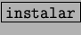

Una vez copiado al HOME, hay que ir a [Archivo] [Abrir] y deberá aparecer el paquete a instalar.
Señalando el paquete y posteriormente pulsando en Abrir o con un
simple doble click, veremos la descripción junto con otros detalles
y un botón que indica . El procedimiento es el mismo que fue
descripto en la página ![[*]](crossref.png) .
.